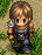
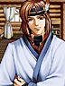

名前
(Complete) |
名前
(ETERNAL) |
画像 |
備考 |
| ラハン老人 |
老人 |
|
古代イースに関する知識を持つ老人。
桟橋にいたフィーナに草笛の作り方を教えたら、ものすごく喜ばれ少々浮かれ気味。 |
| リンダ |
女の人 |
 |
ゼピック村で最も高価な「銀の鈴」が盗賊に盗まれるのではないかと少し不安に思っている。 |
| マーク |
男の子 |
|
フィーナのことが大好き。 |
| エッダ婆さん |
老婆 |
|
ロダの樹になる「ロダの実」を食べたことのある数少ない人物。
ただし、Complete では「ロダの樹」という名前を知らず、ただ「大きな木」と読んでいる。 |
| ルチア婆さん |
老婆 |
|
「銀の鈴」の音色は魔物が嫌うことを知っており、村が魔物に襲われないことに感謝している。 |
| エルバート |
男の人 |
 |
怪しい人物(ダルク＝ファクト)がサルモン神殿へ向かうのを見たらしい。 |
| コルボ老人 |
老人 |
|
以前、魔物に襲われたところをゴーバンに助けられ、それ以降、彼に奇妙な信頼感を感じている。 |
| ソーヤ婆さん |
老婆 |
|
フードの亡霊(ジェノクレス)の存在を知っており、夜にサルモン神殿に近寄らぬよう警告してくる。 |
| ジェバ |
ジェバ |
|
ジェバ＝トバ。
盗賊ゴーバンの母。
アドルがサルモン神殿から救出したフィーナを保護したり、アドルがダームの塔へ行けるようにゴーバンに頼んだりと、重要な役割を果たす。 |
| ロベルス村長 |
村長 |
|
村に伝わる「銀の鈴」が盗まれ、犯人は盗賊だと決めつけ、アドルに返してもらうように交渉を頼む。
「銀の鈴」が帰ってきてからは、アドルを親切にもてなしてくれる。 |
| ルタ＝ジェンマ |
ルタ＝ジェンマ |
 |
かつて女神に仕えた六神官の一人であるジェンマ家の末裔。
幸せな新婚生活を送っているかと思いきや、原因不明の夢遊病により奥さんを困らせている。 |
名前
(Complete) |
名前
(ETERNAL) |
画像 |
備考 |